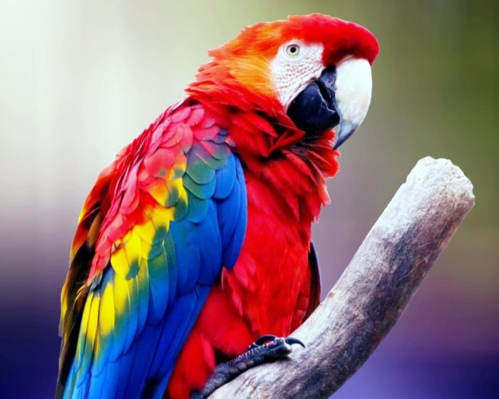

Походження
Великі папуги населяють Центральну та Південну Америку, конкретний ареал проживання залежить від виду папуги.
Особистість
Ара – це дуже великі, яскраві екзотичні папуги, довжина тіла яких може досягати 98 см (гіацинтова ара). Однією з головних особливостей цих птахів є практично повна відсутність оперення на боках голови та області навколо очей. В іншому оперення у ари дуже щільне, воно красиво переливається різними відтінками (синіми, червоними, зеленими) і має широку гаму забарвлення. За кольором оперення молоді папуги ара практично не відрізняються від дорослих особин, у самців і самок забарвлення також схоже.
Крила біля ари витягнуті, загострені на кінчиках. Клиновидний хвіст за своєю довжиною перевищує довжину тіла. Дзюба у птахів дуже велика, закруглена, з сильно загнутим кінчиком, плоска з боків.
В цілому, ара - дуже ефектний, гармонійний птах з яскравим, барвистим пір'ям.
Здоров'я
Ара - довгожителі, у неволі вони живуть близько 40-50 років, а іноді навіть доживають до 100.
Грумінг
Ара - дуже великі папуги, і для хорошого самопочуття їм необхідна простора, міцна клітина, а краще вольєр (рекомендований мінімальний розмір 1х1х2 м). Температура у вольєрі (клітині) повинна опускатися нижче +10. У клітці потрібно розмістити міцну, товсту жердинку, іграшки для папуги (які він не зможе проковтнути, наприклад, підійдуть частини стовбурів дерев), також ємність для купання птиці, т.к. ара дуже люблять купатися.
Для гніздування птахам необхідний ящик з твердого дерева, мінімальний розмір якого 55х70х100 см, льоток - діаметром близько 20 см.
Основу раціону папуг ара складають фрукти та овочі, також папугам необхідні ягоди, горіхи, зернові суміші та ін. У жодному разі не можна забувати про мінеральну підгодівлю.